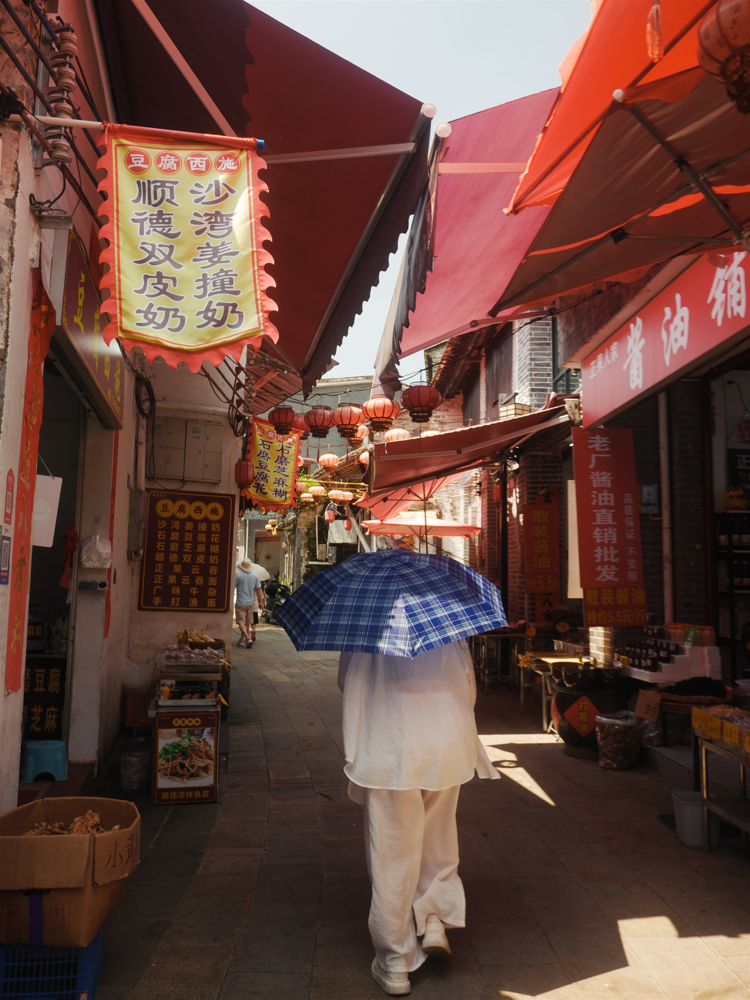
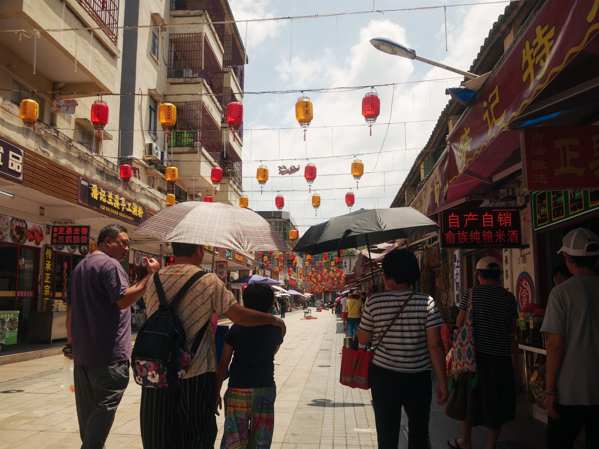
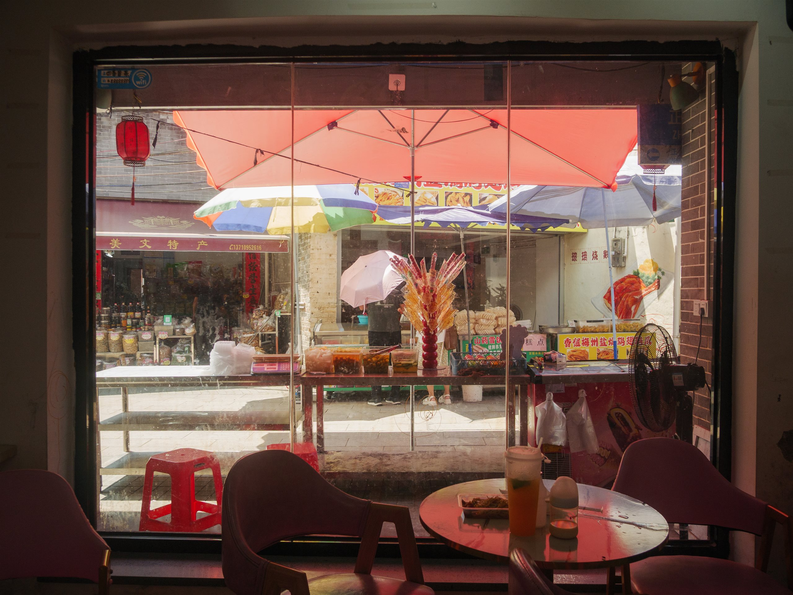
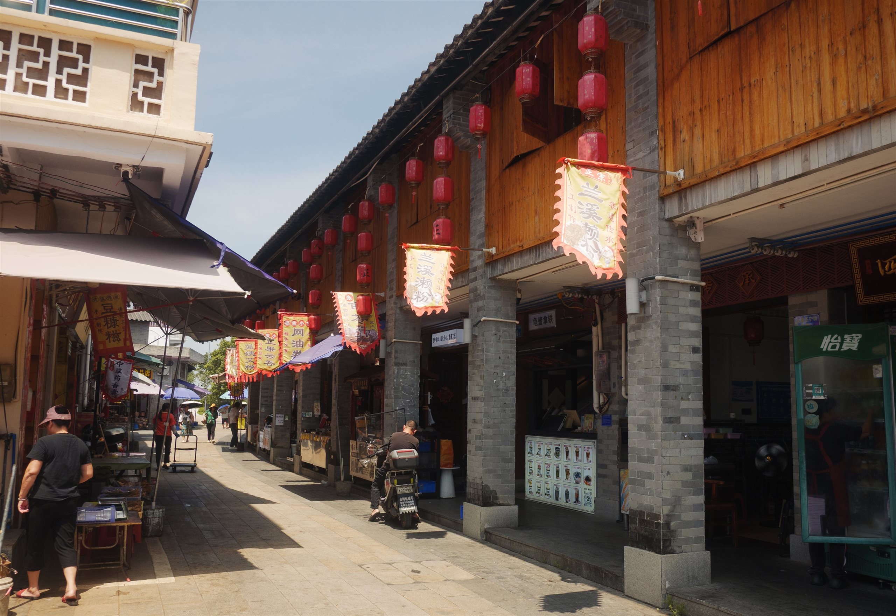
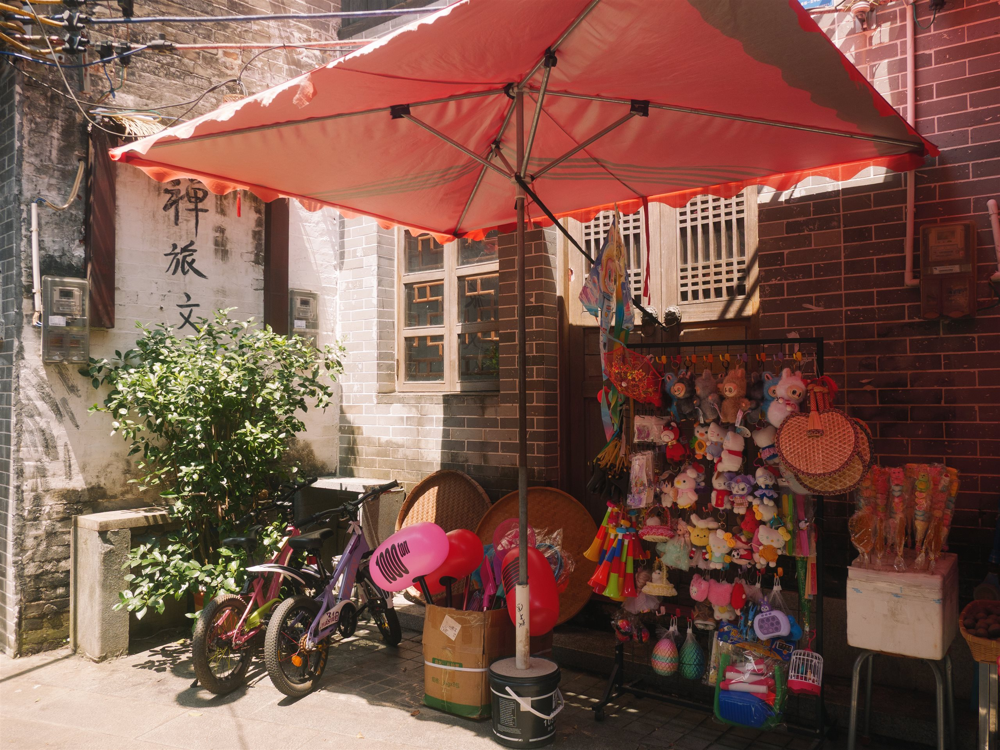

拍街的人都知道，最好的光线出现在你准备收工的那十分钟。那天在大良，我合上包、喝完最后一口柠檬茶，玻璃街对面的伞忽然全撑开了——红、橙、蓝格，一层压着一层，像谁把整个市集抖开晾在太阳底下。
我换了个机位，从店里往外拍。玻璃把两层世界叠在一起：屋内的红塑料凳、屋外的糖葫芦、以及更远处收伞的人。这一帧不需要解释，看的人自己会走进去。
读下去 · 全部随笔 →一个人的街拍档案。镜头跟着巷子走：红灯笼、幌子、伞面下的集市，和岭南县城被日光晒软的午后。按系列成册，不定期增补。


01 / 03
03 / 03正午的逢简，摊主把糖葫芦插成一小束光。玻璃窗把整条街压成了一张明信片——我坐在店里等那把粉伞走过去，等到了一帧，等不到的两帧也值得。
手记 · 示例文案
01 / 02
02 / 02县城商业街把招牌举到天上：米黄的幡、朱红的字、成串的灯笼。遮阳伞撑开一小块阴凉，也撑起一整个摊位的生计。这一组先收两帧，等雨季回来补。
手记 · 示例文案 · 草稿状态拍街的人都知道，最好的光线出现在你准备收工的那十分钟。那天在大良，我合上包、喝完最后一口柠檬茶，玻璃街对面的伞忽然全撑开了——红、橙、蓝格，一层压着一层，像谁把整个市集抖开晾在太阳底下。
我换了个机位，从店里往外拍。玻璃把两层世界叠在一起：屋内的红塑料凳、屋外的糖葫芦、以及更远处收伞的人。这一帧不需要解释，看的人自己会走进去。
读下去 · 全部随笔 →拿相机的人，白天上班，周末进巷子。这里只放自己满意的帧，不设更新承诺；两年后回看，希望它还是一本完整的书。（示例简介，待作者本人校订）